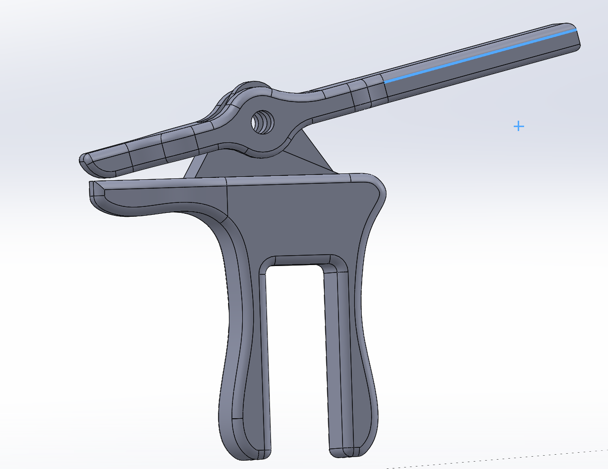
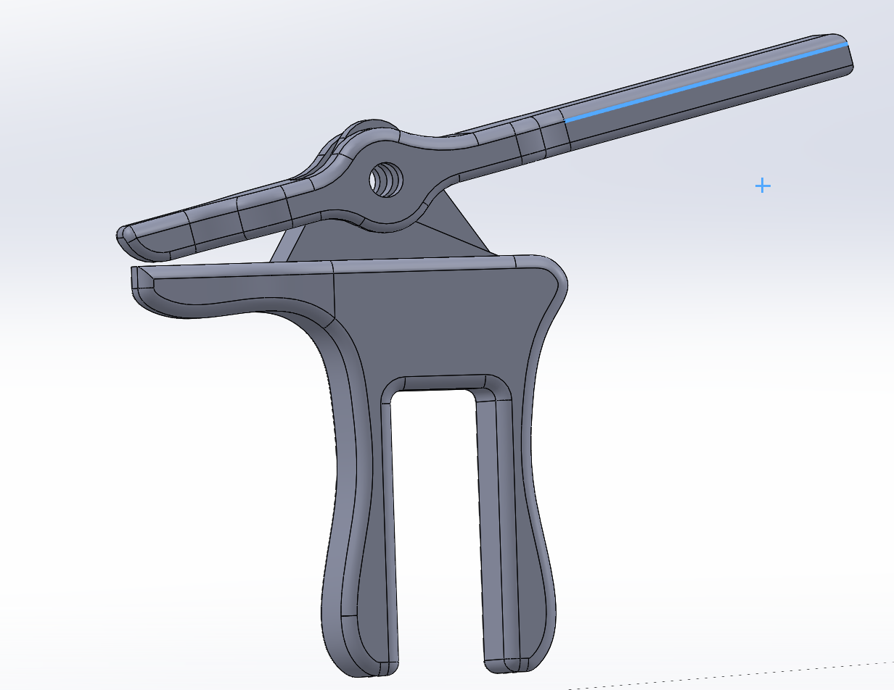

Credit Card Gripper
I worked on this project with a small group as a part of the Enabletech club at UC Berkeley, a club that designs and builds assistive products for people with disabilities. I was fortunate to join a project that aimed to help a local woman with limited arm mobility have a more self-sufficient and independent experience using ATM machines. Our goal was to design a device for her that was capable of gripping, inserting, and taking out credit/debit cards from ATMs.
My group firstly consulted with our client about her needs and visions for a potential product. After coming up with several ideas, we decided on the design ideas listed below. We then met more times with our client for her to test our prototypes and give us feedback for future improvements. After a few months of brainstorming, prototyping, and testing, we presented a final design in December, 2019, which worked while testing at an ATM with her, although there were minor improvements that were completed in January, 2020 while I was away for a semester break at an internship, including slightly changing the angle of the gripper mouth to face towards the handle.
Final Design
 

Three Preliminary Designs

This was the first group engineering project I worked on where I was directly involved in creating a custom product for a client while receiving feedback along the way. It was really endearing to see the feedback and have the conversations we had during the design process, and I enjoyed having a personable experience that connected all of our design work back to someone who would use our product in their day-to-day life.